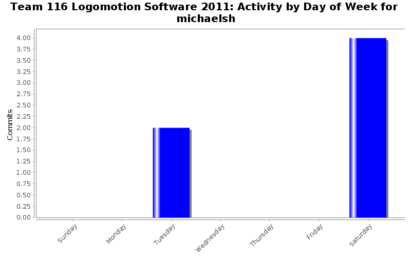

| Directory | Changes | Lines of Code | Lines per Change |
|---|---|---|---|
| / | 4 (100.0%) | 11 (100.0%) | 2.7 |
changed some typos again...
5 lines of code changed in 1 file:
Changed typos and took out some code that wasn't going to work. FML
3 lines of code changed in 2 files:
FIXING SENSOR ISSUES SRRY CAPS LAZYNESS
3 lines of code changed in 1 file: